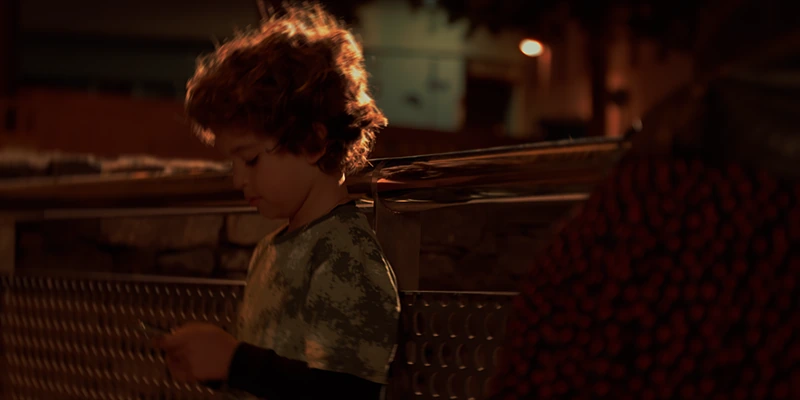

Alberto Alcubilla, Director de Fotografía y Gaffer · Dirección de fotografía
DesertorisCortometraje · DoP · 2025

Sombras del futuroCortometraje · DoP · 2025
ParanoiaFashion Film · DoP · 2024
DesertorisCortometraje · DoP · 2025

Sombras del futuroCortometraje · DoP · 2025
ParanoiaFashion Film · DoP · 2024